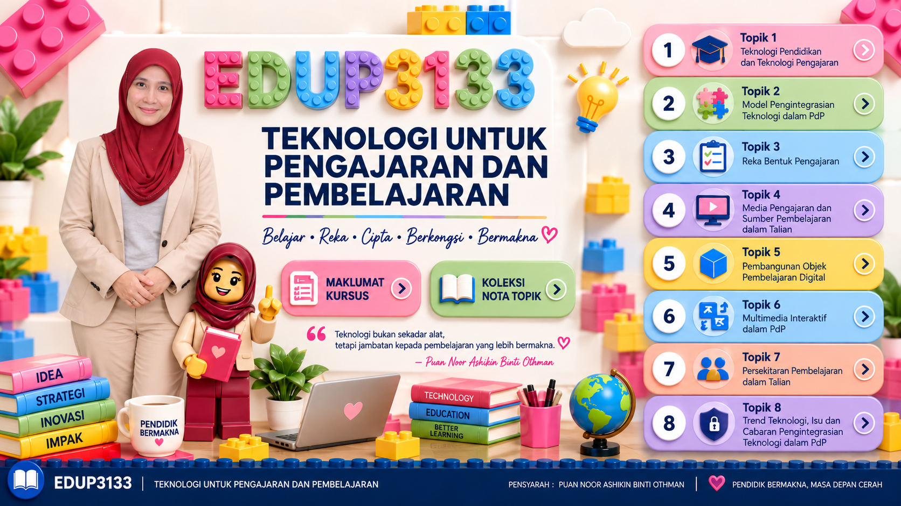
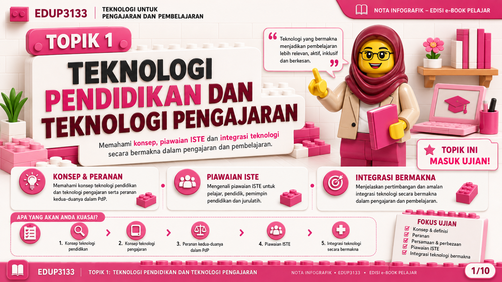

Buka Topik 1
Buka Topik 2
Buka Topik 3
Buka Topik 4
Buka Topik 5
Buka Topik 6
Buka Topik 7
Buka Topik 8
TOPIK 1
Teknologi Pendidikan dan Teknologi Pengajaran
TOPIK 2
Model Pengintegrasian Teknologi dalam PdP
TOPIK 3
Reka Bentuk Pengajaran
TOPIK 4
Media Pengajaran dan Sumber Pembelajaran dalam Talian
TOPIK 5
Pembangunan Objek Pembelajaran Digital
TOPIK 6
Multimedia Interaktif dalam PdP
TOPIK 7
Persekitaran Pembelajaran dalam Talian
TOPIK 8
Trend Teknologi, Isu dan Cabaran Pengintegrasian Teknologi dalam PdP
🏠 UTAMA
TOPIK 1 — Teknologi Pendidikan dan Teknologi Pengajaran
Nota Infografik • Edisi e-Book Pelajar
← SEBELUM
Halaman 1 / 10
SETERUSNYA →

1
2
3
4
5
6
7
8
9
10
Tip: guna ← / → pada papan kekunci untuk bergerak antara halaman. Tekan butang UTAMA untuk kembali ke muka depan.